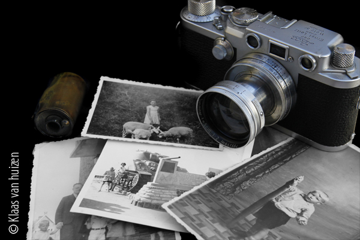

A Brief History of Photography and the People Who Made It Succeed
Color photography started to become popular and accessible with the release of Eastman Kodak’s “Kodachrome” film in the 1930s. Before that, almost all photos were monochromatic – although a handful of photographers, toeing the line between chemists and alchemists, had been using specialized techniques to capture color images for decades before. You’ll find some fascinating galleries of photos from the 1800s or early 1900s captured in full color, worth exploring if you have not seen them already.
These scientist-magicians, the first color photographers, are hardly alone in pushing the boundaries of one of the world’s newest art forms. The history of photography has always been a history of people – artists and inventors who steered the field into the modern era. So, below, you’ll find a brief introduction to some of photography’s most important names. Their discoveries, creations, ideas, and photographs shape our own pictures to this day, subtly or not. Although this is just a brief bird’s-eye view, these nonetheless are people you should know before you step into the technical side of photography: Joseph Nicéphore Niépce Invention: The first permanent photograph (“View from the Window at Le Gras,” shown earlier) Where: France, 1826 Impact: Cameras had already existed for centuries before this, but they had one major flaw: You couldn’t record a photo with them! They simply projected light onto a separate surface – one which artists used to create realistic paintings, but not strictly photographs. Niépce solved this problem by coating a pewter plate with, essentially, asphalt, which grew harder when exposed to light. By washing the plate with lavender oil, he was able to fix the hardened substance permanently to the plate. Quote: “The discovery I have made, and which I call Heliography, consists in reproducing spontaneously, by the action of light, with gradations of tints from black to white, the images received in the camera obscura.” Mic drop. Louis Daguerre